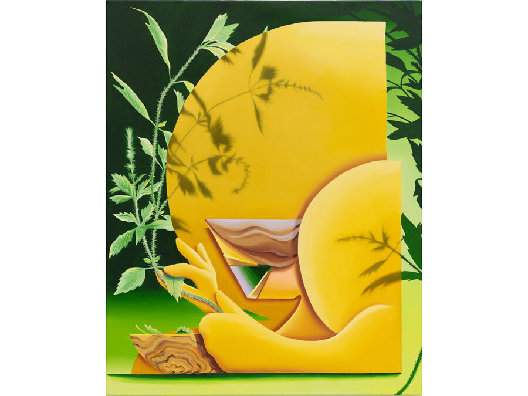

Traces of Devotion
Julius Caesar presents Traces of Devotion, a group exhibition of paintings and drawings by David Onri Anderson, Josiah Ellner, Leasho Johnson, Karen Seapker, Kyle Staver, Margaret R. Thompson and co-curated by MJ Lounsberry and Ro Miller. Please join us Saturday, January 24th from 6-9PM.
JC takes pride in being a platform for artists at many stages in their careers, offering many to have their first exhibition as artist or curator. When MJ first approached us about curating her first show, she expressed a desire to share the work of artists for whom she has great admiration. She shared a number of artists with Ro, and as they discussed her interest in them, their careers and their work, a theme of devotion emerged as a commonality: artists with a commitment to painting, artists with a passion for figuration, and artists with tendrils of the spiritual. Each artist taking more or less from each of the themes, and each individual theme already known for having taken a multitude of forms throughout art history. While these artists having devotion in common, it took presence through divergent approaches to their subject, their studio practices, and an ebbing and flowing relationship to the spiritual within the group.
Their works trace the figure through many forms, both physical and metaphorical. At times approaching the unseen and spiritual sides of figuration, and gesturing toward what lies just beyond the visible. At other times they build structures through human form. Some speak through repetition and ritual, others through intimacy and abstraction. Across these varied practices, each artist leaves behind a mark of touch, of time, and belief. Reflecting on their care and attentiveness as the thread uniting the works, they share a devotion to making, to presence, and to the quiet persistence of gesture and thought. Gathered together, they represent a collective meditation on what it means to make something endure. The exhibition becomes, in this sense, an offering—a constellation of voices reflecting on how the body can hold memory, belief, and the enduring impulse to connect the seen with the unseen.
The exhibition began as an inquiry into spirituality and figuration, but through studio visits and conversation, it soon expanded into a meditation on presence itself: how the body and its form, echo, and even absence can become an avatar for emotion and story, a vessel for belief, or a mirror for projection and recognition. Together, these works ask what remains when the visible begins to dissolve, when representation gives way to feeling, and when the figure becomes something sensed rather than seen. “Traces of Devotion,” says Lounsberry, “began as an idea I had been considering for some time – an exploration of spirituality and the figure has long shaped both my studio practice and artistic curiosity. When I brought the concept to Julius Caesar, the team’s enthusiasm helped bring it to life, and through ongoing conversations with my co-curator, Ro, and our studio visits with artists, the exhibition evolved into something broader, and hopefully, more resonant.”
Conversation on the exhibition began more than a year ago, with the topic of the figure and the spiritual being not only of great personal interest to both curators, but also having a storied history in our city. Chicago’s role in the art world has been known for its appreciation of bold, idiosyncratic approaches to the figure, and even the city’s largest artistic institution has embraced combining art and the spiritual. While often met with skepticism in contemporary art, SAIC presented it as worthy of great consideration, and that presentation is in no small part due to Frank Piatek, with whom both curators studied under at SAIC. Ro, MJ, and countless others found his curriculum on the subject as deeply impactful, and their experience in his class came up countless times during the exhibitions development, from initial discussions to studio visits with artists outside Chicago. While neither imagined the exhibition would be received after Frank’s passing, nor did they intend it be dedicated to his legacy, both feel they would never have imagined the exhibition, nor felt such enthusiasm to tackle its subject, without his impact on their education. Both curators and JC hope the exhibition is but one small honor in a monumental career as an artist and educator. His artistic curiosity and enthusiasm for the diversity and breadth of approaches within a single subject has made an indelible impression on countless students, many of whom have gone on to think about his ideas for decades. While just one small example, we hope Traces of Devotion extends the line of thought he drew for so many, and make an offering of artists who locate the sacred within the everyday and human form.
Born December of 1944 in the Irving Park neighborhood, Frank Piatek would become an influential figure in Chicago’s art world as an artist, intellectual, and educator. As an artist, Piatek was quintessentially Chicago despite his work never fitting cleanly into the city’s dominant painting movements. His abstract paintings were often distilled into volumetric forms contained in hermetic compositions, but his assemblages were known for taking messier, more chaotic forms. Their compositions sprawled like an exploded consciousness into constellations of linguistic elements and linear schematics, a scattered array frenzied with an attempt at organization and understanding. For many students who passed through SAIC, however, they would know him most intimately through his class, Art and the Spiritual.
Piatek first taught at SAIC in 1971, and was there near continuously until his passing in 2026. 20 years after starting at SAIC, he created what would become an iconic course. Art and the Spiritual, a studio and lecture class offered to SAIC undergraduates, would question where one of the historically foundational elements of art could be found in today’s art discourse. After 10s of thousands of years of art being inspired by, and representative of, spirituality in its countless forms, why was it so hard to find in the contemporary art world. Presenting varied forms of the spiritual both throughout art history and by recent artists, Piatek expanded on the vary idea of the spiritual through a diverse assortment of material, formal and conceptual associations. Including symmetry, patterning, symbology, conspiracies and varying forms of text, his class was not a theory laid out in linear form, but a curiosity expressed through interweaving and branching presentations. Encouraging material and conceptual experimentation, the class would often lead students to Piatek’s other long-tenured class, Materials and Techniques. Piatek’s immense influence began by re-imagining foundational ideas, and he presented them through a generous warmth encouraging both curiosity and thorough investigation. Julius Caesar was founded by SAIC students to share their work and the work of their community. As many of its directors had taken and found great appreciation for Piatek’s class, they invited him to make an exhibition, and he obliged in 2011 with an installation reminiscent of his slide lectures. The exhibition included an artist talk surrounded by one of his wall-drawing installations, whose handwritten concepts and fervent diagramming built a web of the interconnected and inscrutable, from elements of the universe to forms and categories of the subconscious. The original exhibition page is visible here, and some documentation along with a video of the artist talk are presented on this page. We hope to improve the documentation presented here in time, but some technological hurdles currently limit our access to the original documentation.